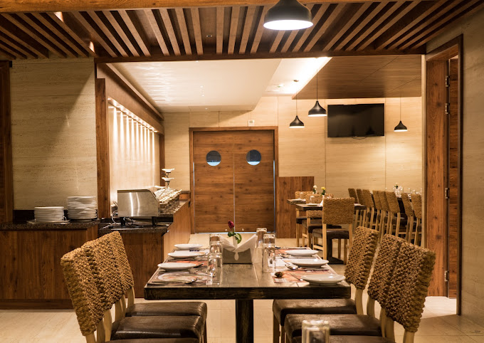
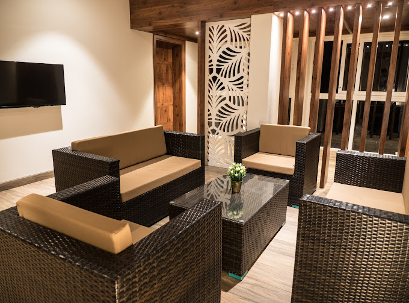
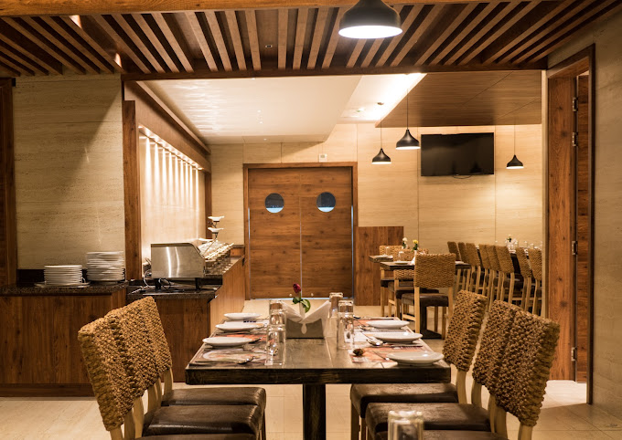
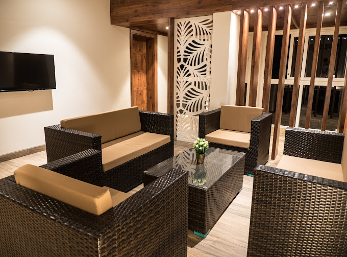

Hotel Cholaa Dynasty
The hotel is situated close to Swamimalai temple. The staff gave us a map of all the temples in Kumbakonam. This is very helpful when you are planning to visit multiple temples in a day and not knowing where to start. The staff gave clear directions to nearby places which was very helpful. The breakfast buffet menu is vegetarian-friendly and primarily consists of South Indian dishes like Pongal, Dosa, Upma, Vada, etc. They also provide egg and egg pancakes as non-veg options. It was delicious! I didn't enjoy only one dish - Sugar Pongal. The taste was weird! The triple bed room that we got was spacious, clean and comfortable. It comes with an amazing shower and balcony. We weren't able to lock the balcony door. We were concerned about safety. The staff got it resolved by installing a latch before we returned to the hotel. I appreciate the efforts taken to get it resolved so soon! On the whole, I highly recommend this hotel for your next family trip to Kumbakonam even though there were minor hiccups.